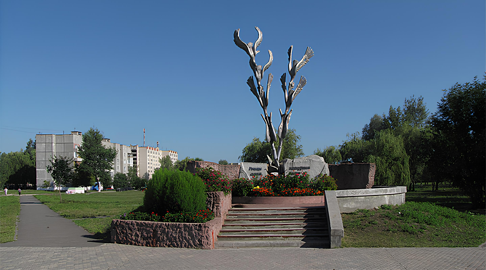

Архив
Пять подробных биографий с фотографиями и видеоматериалами.
 Свои герои
г. Речица
Свои герои
г. Речица


Патриотический проект
Интерактивный архив памяти о жителях Речицы и Речицкого района, исполнявших интернациональный долг в Афганистане. Биографии, фотографии и живые воспоминания — чтобы подвиг земляков оставался рядом.
О проекте
Цифровая платформа памяти, созданная учащимися и педагогами Речицкого региона.
Мы собираем воедино, оцифровываем и сохраняем биографические хроники, живые воспоминания и фотографии земляков, честно выполнивших свой интернациональный долг в Афганистане.
Современные веб-технологии делают исторические знания доступными и наглядными для молодого поколения — формируя чувство гордости за героическое прошлое жителей города Речицы и Речицкого района.
Пять подробных биографий с фотографиями и видеоматериалами.
Ленты кадров и записей — от семейных снимков до школьных встреч.
Педагоги и учащиеся клуба «БАГОР» средней школы №7 г. Речицы.